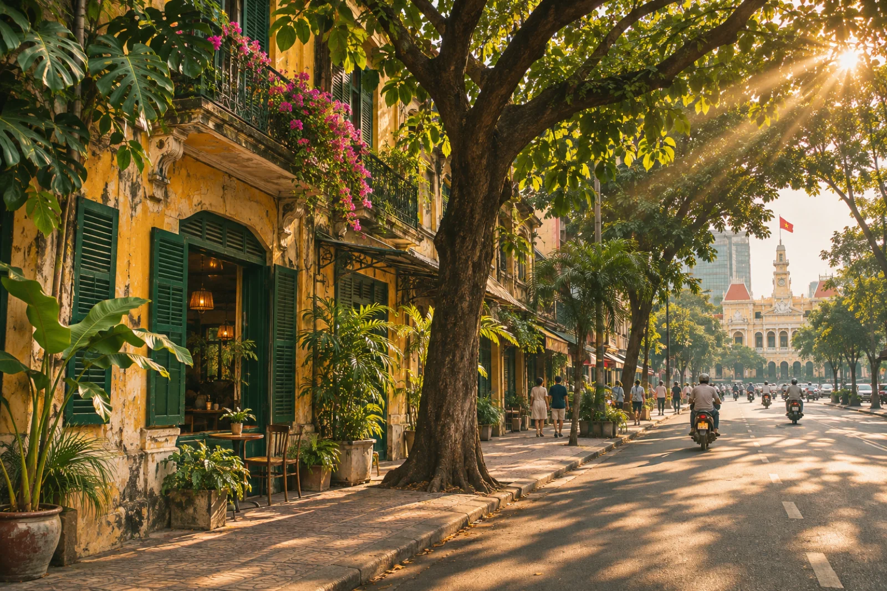
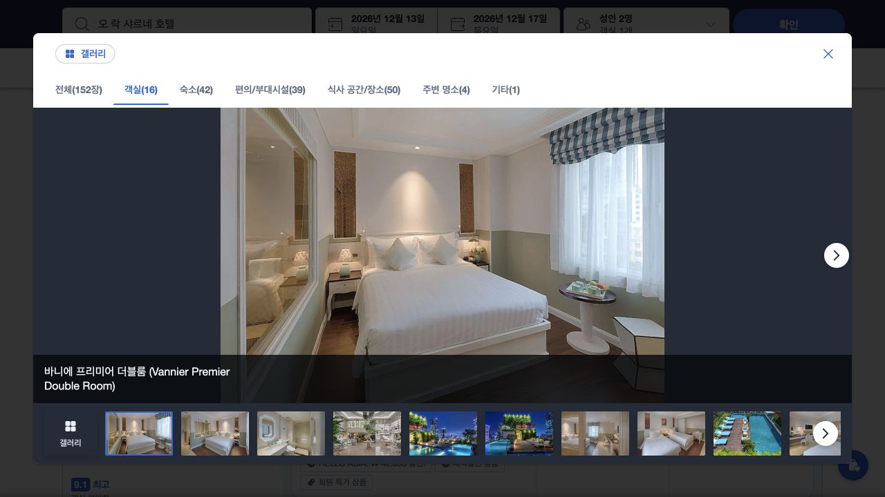
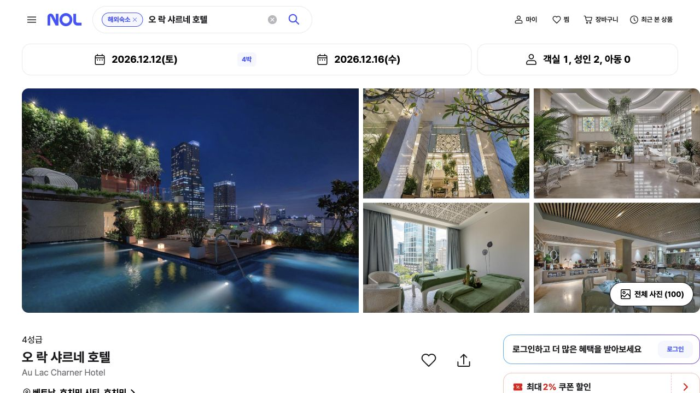

가는 편
인천 ICN
5시간 30분
호치민 SGN
비엣젯항공 VJ863
위탁 20kg

The flights
왕복 직항 / 공항 현지 시각
가는 편
인천 ICN
호치민 SGN
비엣젯항공 VJ863
위탁 20kg
오는 편
호치민 SGN
인천 ICN
선 푸꾸옥항공 9G400
위탁 1개
11월 15일 조회가입니다. 발권 상태와 결제 총액은 예약 화면에서 확인해요. 귀국편 위탁은 1개 포함으로 표시됐고 무게 한도는 확인이 필요해요.
Our stay
12월 13일~16일 / 성인 2명 / 3박
바니에 프리미어 더블룸
퀸 침대 1개. 조식 후에 루프탑 수영장에서 쉬고, 저녁에는 응우옌후에와 사이공강을 걸어요.
11월 15일 조회 당시 모두 조식 포함에 무료 취소가 가능했어요. 아고다는 애프터눈티도 포함이고 12월 10일 전까지 무료 취소로 표시됐어요.


Four days in Saigon
같이 골라볼 일정 초안
14:20 호치민 도착. 체크인하고 응우옌후에 거리의 42번 카페 아파트에 들러요. 저녁 먹고 박당 강변까지 걸으면 첫날 코스로 충분해요.
Around Saigon
벤탄시장 근처 베트남 음식점. 새우와 돼지고기가 든 반쎄와 코코넛 껍질에 담아 나오는 볶음밥을 둘이 나눠 먹기 좋아요.
떤딘 쪽 정원이 있는 베트남 가정식집. 레몬그라스 두부튀김과 새콤한 생선 수프가 대표 메뉴예요.
Hôtel des Arts Saigon 24층. 일몰 무렵 도시 전경을 보며 둘이 한잔하기 좋은 곳이에요.
베트남 전쟁의 기록과 사진이 있는 곳. 통일궁과 묶기 좋고 전시 사진 중 강렬한 장면이 있어요. 공식 안내 기준 입장 마감은 17:00이에요.
베트남 전쟁사에 관심 있다면 시내 일정 중 하루를 바꿔 다녀올 만한 근교 유적이에요. 이동 시간을 감안해 반나절 이상 비워두세요.
중앙우체국 맞은편에 있어 같은 동선에 넣을 수 있어요. 복원 기간 관광객 내부 관람이 중단돼 있어 외관을 보고 지나가면 돼요.
Getting around
GrabCar에 호텔 영문명과 주소를 넣고 공항 터미널별 앱 안내를 따라 픽업 지점으로 가세요. 귀국편은 도로 혼잡을 고려해 여유 있게 출발하세요.
새벽 도착편이면 도착하자마자 방에 들어갈 수 있도록 예약 시작일과 늦은 체크인 가능 여부를 호텔에 확인하세요.
바니에 프리미어 더블과 하멜린 이그제큐티브 더블은 이번 조회에서 퀸 침대 1개였어요. 러피어 디럭스는 무창 객실이에요. 이름이 비슷한 오 락 지점도 있으니 주소를 맞춰 보세요.
Before we go
숙소는 12월 13일 체크인부터 16일 체크아웃까지 3박이에요. 항공편과 숙소의 예약 조건을 확인해요.
체크한 항목은 이 브라우저에 저장돼요.